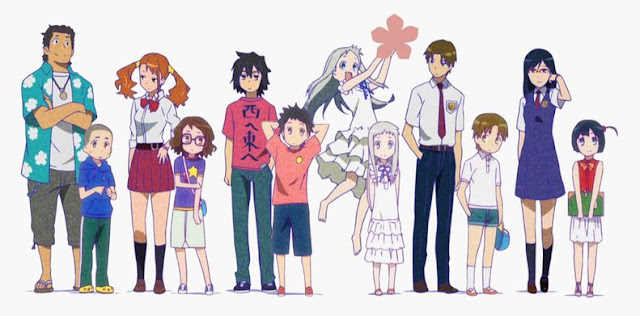
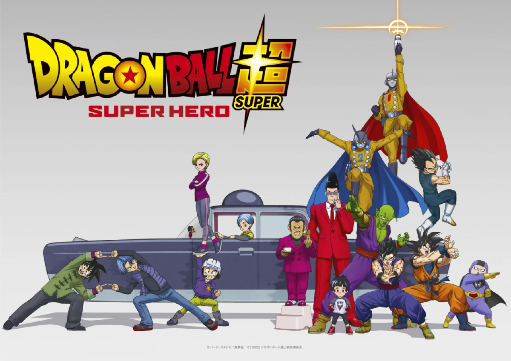
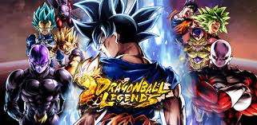
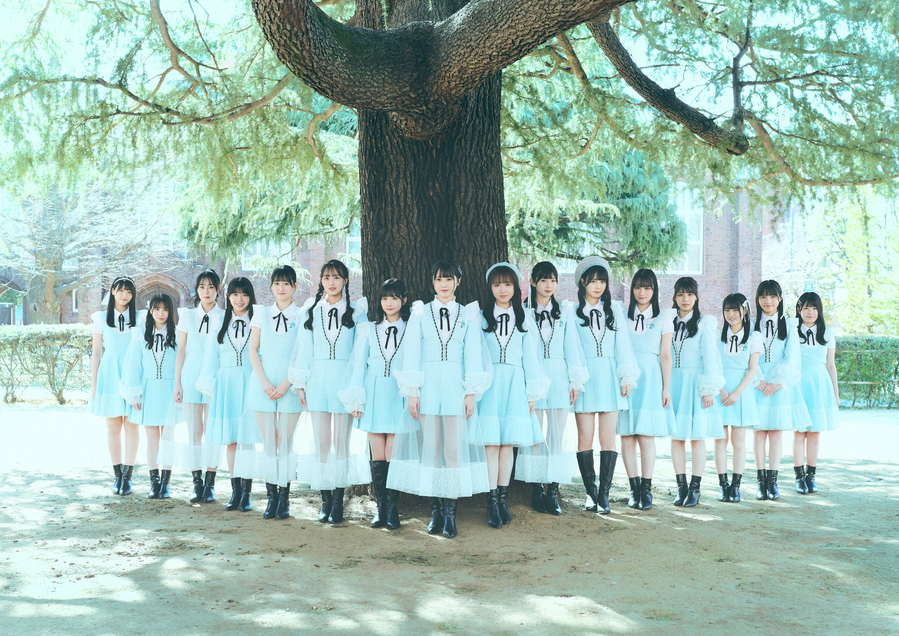

ยินดีต้อนรับเข้าสู่บล็อกของฉัน ที่ซึ่งฉันจะพาคุณไปรู้จักกับโลกของฉันที่เต็มไปด้วยเกม อนิเมะ เพลง และศิลปินที่ชอบ สิ่งเหล่านี้คือสิ่งที่ทำให้ชีวิตของฉันมีสีสันและช่วยให้ฉันผ่อนคลายจากความวุ่นวายของชีวิตประจำวัน
1."Your Name" (君の名は。)
 อนิเมะเรื่อง "Your Name" โดยผู้กำกับ Makoto Shinkai เป็นหนึ่งในเรื่องที่ฉันประทับใจมากที่สุด ไม่เพียงแค่เพราะภาพที่สวยงามและเพลงประกอบที่ไพเราะ แต่ยังเพราะเนื้อเรื่องที่ลึกซึ้งและซับซ้อน เรื่องราวของ Taki และ Mitsuha ที่ต้องสลับร่างกันและพยายามค้นหาความจริงเกี่ยวกับกันและกันเป็นสิ่งที่ดึงดูดใจฉันอย่างมาก ความสัมพันธ์ที่ค่อย ๆ พัฒนาและการผสมผสานของความเชื่อมโยงทางเวลาทำให้ฉันรู้สึกว่าอนิเมะเรื่องนี้เป็นมากกว่าภาพยนตร์แอนิเมชันทั่วไป มันคือการเดินทางของความรัก ความคิดถึง และความหวังที่ถูกถ่ายทอดอย่างลงตัวผ่านตัวละครและภาพทิวทัศน์ที่สวยงาม ทุกครั้งที่ดู "Your Name" ฉันมักจะพบกับความรู้สึกใหม่ ๆ และกลับมาทบทวนเกี่ยวกับเรื่องราวในชีวิตของตัวเอง
อนิเมะเรื่อง "Your Name" โดยผู้กำกับ Makoto Shinkai เป็นหนึ่งในเรื่องที่ฉันประทับใจมากที่สุด ไม่เพียงแค่เพราะภาพที่สวยงามและเพลงประกอบที่ไพเราะ แต่ยังเพราะเนื้อเรื่องที่ลึกซึ้งและซับซ้อน เรื่องราวของ Taki และ Mitsuha ที่ต้องสลับร่างกันและพยายามค้นหาความจริงเกี่ยวกับกันและกันเป็นสิ่งที่ดึงดูดใจฉันอย่างมาก ความสัมพันธ์ที่ค่อย ๆ พัฒนาและการผสมผสานของความเชื่อมโยงทางเวลาทำให้ฉันรู้สึกว่าอนิเมะเรื่องนี้เป็นมากกว่าภาพยนตร์แอนิเมชันทั่วไป มันคือการเดินทางของความรัก ความคิดถึง และความหวังที่ถูกถ่ายทอดอย่างลงตัวผ่านตัวละครและภาพทิวทัศน์ที่สวยงาม ทุกครั้งที่ดู "Your Name" ฉันมักจะพบกับความรู้สึกใหม่ ๆ และกลับมาทบทวนเกี่ยวกับเรื่องราวในชีวิตของตัวเอง
2."Ano Hi Mita Hana no Namae o Bokutachi wa Mada Shiranai" (あの日見た花の名前を僕達はまだ知らない)

เป็นอนิเมะที่เต็มไปด้วยความรู้สึกและความทรงจำที่ลึกซึ้ง เรื่องราวของกลุ่มเพื่อนในวัยเด็กที่ต้องกลับมารวมตัวกันอีกครั้งหลังจากการจากไปของ Menma เพื่อนคนหนึ่งในกลุ่ม ซึ่งพวกเขาเชื่อว่าเธอกลับมาเพื่อขอให้พวกเขาช่วยทำสิ่งสุดท้ายให้สำเร็จ ความเจ็บปวดและความทรงจำที่ถูกฝังไว้ถูกปลุกขึ้นมาอีกครั้ง การเดินทางของการปล่อยวางและการยอมรับความจริงทำให้อนิเมะเรื่องนี้กลายเป็นหนึ่งในเรื่องที่กระทบจิตใจฉันอย่างลึกซึ้ง ภาพและดนตรีประกอบช่วยเสริมสร้างบรรยากาศที่เข้มข้นและทำให้ความรู้สึกของตัวละครถ่ายทอดถึงผู้ชมได้อย่างชัดเจน ทุกครั้งที่ดู "Anohana" ฉันมักจะรู้สึกถึงความหมายของมิตรภาพและการเรียนรู้ที่จะก้าวผ่านความสูญเสียในชีวิต
3." Dragon Ball Super: Super Hero" (ドラゴンボール 超 スーパー スーパーヒーロー)

"Dragon Ball Super: Super Hero" เป็นภาคล่าสุดในแฟรนไชส์ Dragon Ball ที่นำเสนอการผจญภัยใหม่ของนักรบ Z โดยเน้นไปที่การกลับมาของ Piccolo และ Gohan ในการต่อสู้กับองค์กรชั่วร้ายใหม่ที่เรียกว่า Red Ribbon Army เรื่องราวนำเสนอการพัฒนาของตัวละครที่เคยเป็นรองและนำเสนอการต่อสู้ที่น่าตื่นเต้น รวมถึงการใช้เทคโนโลยี CGI ที่ช่วยเพิ่มความน่าสนใจในการต่อสู้และการแสดงออกของตัวละคร
สิ่งที่ทำให้ "Dragon Ball Super: Super Hero" น่าสนใจคือการให้ความสำคัญกับการพัฒนาของ Gohan และ Piccolo ซึ่งมักจะได้รับความสนใจน้อยกว่าตัวละครหลักอย่าง Goku และ Vegeta นอกจากนี้ ภาพและดนตรีประกอบยังช่วยเสริมสร้างบรรยากาศที่มีพลังและความสนุกสนานให้กับแฟน ๆ การกลับมาของ Red Ribbon Army เป็นการย้อนกลับไปสู่รากฐานของเรื่องราวที่เคยเป็นที่รัก ทำให้ฉันรู้สึกถึงความทรงจำดี ๆ จากภาคแรก ๆ ของ Dragon Ball ในขณะเดียวกันก็เพิ่มความสดใหม่และน่าตื่นเต้น
หมวดเกมส์

1.False Dream ความฝันที่ผิด
 "False Dream" เป็นเกมที่ฉันชื่นชอบมากในช่วงนี้ เกมนี้เสนอประสบการณ์ที่ผสมผสานระหว่างความลึกลับและความฝัน เรื่องราวของเกมมุ่งเน้นไปที่การสำรวจโลกความฝันที่น่ากลัวและหาสิ่งผิดปกติ ซึ่งเต็มไปด้วยปริศนาและความน่ากลัวที่ต้องเผชิญ
"False Dream" เป็นเกมที่ฉันชื่นชอบมากในช่วงนี้ เกมนี้เสนอประสบการณ์ที่ผสมผสานระหว่างความลึกลับและความฝัน เรื่องราวของเกมมุ่งเน้นไปที่การสำรวจโลกความฝันที่น่ากลัวและหาสิ่งผิดปกติ ซึ่งเต็มไปด้วยปริศนาและความน่ากลัวที่ต้องเผชิญ
2.dragon ball legends

"Dragon Ball Legends" เป็นเกมมือถือที่นำเสนอประสบการณ์การต่อสู้ที่น่าตื่นเต้นในโลกของ Dragon Ball เกมนี้เป็นที่รักของแฟน ๆ ด้วยการรวมตัวละครจากอนิเมะและมังงะที่เราคุ้นเคยเข้าด้วยกัน ไม่ว่าจะเป็น Goku, Vegeta, หรือ Frieza การต่อสู้ในเกมนี้มีความรวดเร็วและเต็มไปด้วยแอ็คชั่น การใช้การ์ดเพื่อโจมตีและป้องกันเพิ่มความลึกให้กับกลยุทธ์ในการเล่น
สิ่งที่ทำให้ "Dragon Ball Legends" โดดเด่นคือกราฟิกที่สวยงามและการออกแบบตัวละครที่เหมือนจริง นอกจากนี้ การต่อสู้แบบเรียลไทม์และระบบคอมโบที่ลื่นไหลช่วยเพิ่มความสนุกในการเล่น การมีโหมดเนื้อเรื่องที่เข้มข้นและกิจกรรมพิเศษที่จัดขึ้นเป็นระยะ ๆ ก็ช่วยให้ผู้เล่นมีความท้าทายและความสนุกในการเล่นเกมอย่างต่อเนื่อง
หมวดเพลง และ ศิลปินที่ชอบ

1.ศิลปินที่ชอบ : STU48

STU48 เป็นกลุ่มศิลปินสาวที่มีเสน่ห์และความสามารถโดดเด่นในวงการเพลงญี่ปุ่น พวกเธอเป็นส่วนหนึ่งของโปรเจกต์ AKB48 ซึ่งเน้นการแสดงสดและการเชื่อมโยงกับแฟน ๆ อย่างใกล้ชิด STU48 มาพร้อมกับคอนเซ็ปต์ที่เป็นเอกลักษณ์ด้วยการใช้เรือเป็นฐานในการทำกิจกรรม ซึ่งทำให้พวกเธอมีภาพลักษณ์ที่แตกต่างจากกลุ่มศิลปินอื่น ๆ
2."AI NO OMOSA" (愛の重さ。)
 เพลงที่ชอบฟังในช่วงนี้ โดยศิลปิน STU48 การถ่ายทอดอารมณ์ของเพลงมีความเป็นธรรมชาติและสะท้อนถึงความรักที่มีน้ำหนัก เพลงนี้ช่วยให้ผู้ฟังรู้สึกถึงความจริงใจและความหนักหน่วงของความรักที่ถูกถ่ายทอดผ่านเพลง การใช้การแสดงสดและการนำเสนอวิดีโอที่เกี่ยวข้องกับเพลงช่วยเพิ่มความรู้สึกที่เข้มข้นและจริงจัง
เพลงที่ชอบฟังในช่วงนี้ โดยศิลปิน STU48 การถ่ายทอดอารมณ์ของเพลงมีความเป็นธรรมชาติและสะท้อนถึงความรักที่มีน้ำหนัก เพลงนี้ช่วยให้ผู้ฟังรู้สึกถึงความจริงใจและความหนักหน่วงของความรักที่ถูกถ่ายทอดผ่านเพลง การใช้การแสดงสดและการนำเสนอวิดีโอที่เกี่ยวข้องกับเพลงช่วยเพิ่มความรู้สึกที่เข้มข้นและจริงจัง